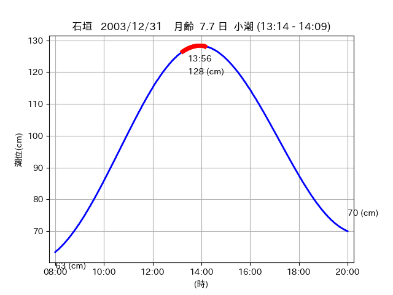
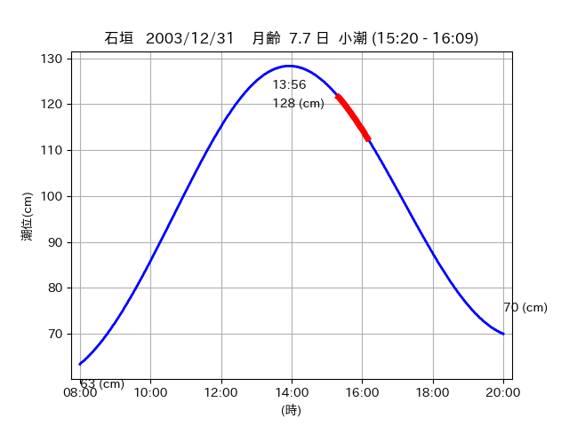

<!DOCTYPE html>
<html>
<head>
    
    <meta http-equiv="content-type" content="text/html; charset=UTF-8" />
    
        <script>
            L_NO_TOUCH = false;
            L_DISABLE_3D = false;
        </script>
    
    <style>html, body {width: 100%;height: 100%;margin: 0;padding: 0;}</style>
    <style>#map {position:absolute;top:0;bottom:0;right:0;left:0;}</style>
    <script src="https://cdn.jsdelivr.net/npm/leaflet@1.9.3/dist/leaflet.js"></script>
    <script src="https://code.jquery.com/jquery-3.7.1.min.js"></script>
    <script src="https://cdn.jsdelivr.net/npm/bootstrap@5.2.2/dist/js/bootstrap.bundle.min.js"></script>
    <script src="https://cdnjs.cloudflare.com/ajax/libs/Leaflet.awesome-markers/2.0.2/leaflet.awesome-markers.js"></script>
    <link rel="stylesheet" href="https://cdn.jsdelivr.net/npm/leaflet@1.9.3/dist/leaflet.css"/>
    <link rel="stylesheet" href="https://cdn.jsdelivr.net/npm/bootstrap@5.2.2/dist/css/bootstrap.min.css"/>
    <link rel="stylesheet" href="https://netdna.bootstrapcdn.com/bootstrap/3.0.0/css/bootstrap-glyphicons.css"/>
    <link rel="stylesheet" href="https://cdn.jsdelivr.net/npm/@fortawesome/fontawesome-free@6.2.0/css/all.min.css"/>
    <link rel="stylesheet" href="https://cdnjs.cloudflare.com/ajax/libs/Leaflet.awesome-markers/2.0.2/leaflet.awesome-markers.css"/>
    <link rel="stylesheet" href="https://cdn.jsdelivr.net/gh/python-visualization/folium/folium/templates/leaflet.awesome.rotate.min.css"/>
    
            <meta name="viewport" content="width=device-width,
                initial-scale=1.0, maximum-scale=1.0, user-scalable=no" />
            <style>
                #map_3c5f1c66a73a2df056d858b4b86074e3 {
                    position: relative;
                    width: 2048.0px;
                    height: 1600.0px;
                    left: 0.0%;
                    top: 0.0%;
                }
                .leaflet-container { font-size: 1rem; }
            </style>
        
</head>
<body>
    
    
            <div class="folium-map" id="map_3c5f1c66a73a2df056d858b4b86074e3" ></div>
        
</body>
<script>
    
    
            var map_3c5f1c66a73a2df056d858b4b86074e3 = L.map(
                "map_3c5f1c66a73a2df056d858b4b86074e3",
                {
                    center: [24.24, 123.988],
                    crs: L.CRS.EPSG3857,
                    ...{
  "zoom": 12,
  "zoomControl": true,
  "preferCanvas": false,
}

                }
            );

            

        
    
            var tile_layer_172d739d08d0aea6295744886a356116 = L.tileLayer(
                "https://cyberjapandata.gsi.go.jp/xyz/seamlessphoto/{z}/{x}/{y}.jpg",
                {
  "minZoom": 0,
  "maxZoom": 18,
  "maxNativeZoom": 18,
  "noWrap": false,
  "attribution": "\u5730\u7406\u9662\u5730\u56f3",
  "subdomains": "abc",
  "detectRetina": false,
  "tms": false,
  "opacity": 1,
}

            );
        
    
            tile_layer_172d739d08d0aea6295744886a356116.addTo(map_3c5f1c66a73a2df056d858b4b86074e3);
        
    
            var marker_593707b6417c8b7e210a90f36f5e134e = L.marker(
                [24.3614, 123.9587],
                {
}
            ).addTo(map_3c5f1c66a73a2df056d858b4b86074e3);
        
    
            var icon_2a746ce0c71ba154b5f3d454753cc36e = L.AwesomeMarkers.icon(
                {
  "markerColor": "blue",
  "iconColor": "white",
  "icon": "info-sign",
  "prefix": "glyphicon",
  "extraClasses": "fa-rotate-0",
}
            );
        
    
        var popup_832e5b9c1998a344231fef8927ef6c7d = L.popup({
  "maxWidth": "100%",
});

        
            
                var html_ba1afea1a5bfa873fef701356f708bef = $(`<div id="html_ba1afea1a5bfa873fef701356f708bef" style="width: 100.0%; height: 100.0%;"><table><tr><td></td></tr><tr><td><center>20031231 No.2 </center></table></td></tr></table</div>`)[0];
                popup_832e5b9c1998a344231fef8927ef6c7d.setContent(html_ba1afea1a5bfa873fef701356f708bef);
            
        

        marker_593707b6417c8b7e210a90f36f5e134e.bindPopup(popup_832e5b9c1998a344231fef8927ef6c7d)
        ;

        
    
    
                marker_593707b6417c8b7e210a90f36f5e134e.setIcon(icon_2a746ce0c71ba154b5f3d454753cc36e);
            
    
            var marker_a59d5bee5964734ec02806c94ca8f9eb = L.marker(
                [24.2399, 123.9877],
                {
}
            ).addTo(map_3c5f1c66a73a2df056d858b4b86074e3);
        
    
            var icon_e5aba64373b74a9d12383e307cc70fd4 = L.AwesomeMarkers.icon(
                {
  "markerColor": "blue",
  "iconColor": "white",
  "icon": "info-sign",
  "prefix": "glyphicon",
  "extraClasses": "fa-rotate-0",
}
            );
        
    
        var popup_e2301d969e2186bf7004c1840106ee4a = L.popup({
  "maxWidth": "100%",
});

        
            
                var html_9c14f68e0e0c1ed20ef0a6c66e136824 = $(`<div id="html_9c14f68e0e0c1ed20ef0a6c66e136824" style="width: 100.0%; height: 100.0%;"><table><tr><td></td></tr><tr><td><center>20031231 No.3 </center></table></td></tr></table</div>`)[0];
                popup_e2301d969e2186bf7004c1840106ee4a.setContent(html_9c14f68e0e0c1ed20ef0a6c66e136824);
            
        

        marker_a59d5bee5964734ec02806c94ca8f9eb.bindPopup(popup_e2301d969e2186bf7004c1840106ee4a)
        ;

        
    
    
                marker_a59d5bee5964734ec02806c94ca8f9eb.setIcon(icon_e5aba64373b74a9d12383e307cc70fd4);
            
</script>
</html>